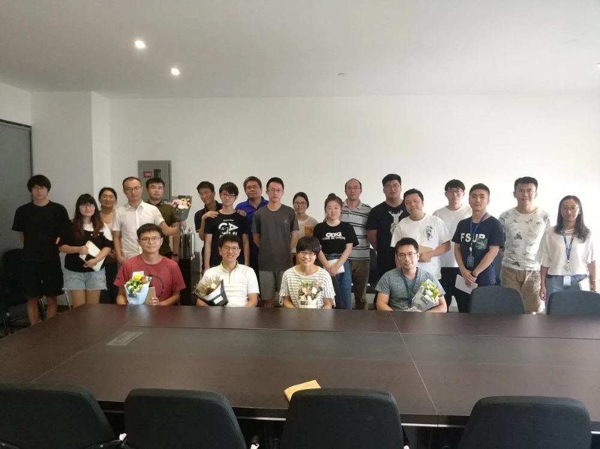

秋天是收获的季节，标志着学期的开始，教师们则会在这个重要的季节里收获很多充满希望和热情的学生，来开启又一段教学/科研生活。而对于学生来说，在这入学的日子里，也应该就能记起教师们的辛勤与光荣，来感谢老师们不遗余力的引导与帮助，这也是教师节为何是定在了每年9月10日的理由。
中国有悠久的尊师重道的传统，古代就有“人有三尊，君、父、师”的说法。教师节的宗旨也就是提高人们对教师所作贡献的认识和评价，肯定教师们为教育事业所作的贡献。恩师掬取天池水,洒向人间育新苗，如果有人说，教师是太阳底下最光辉的职业，那也不会过分，甚至还有人调侃到，老师们都“起得比鸡早，睡得比贼晚，跑得比马快，吃得比猪差”。玩笑归玩笑，但平心而论，教师们的工作同每个家庭、每个儿童、少年、青年、甚至成年息息相关，他们是人类文明的传播者，还有人说他们是人类灵魂的工程师，事实上他们是最值得去拥有和享受一个专属节日的职业了。
中国古代的尊师传统传承至今，也许有人就会误解到教师节只是中国的节日了。事实上并不是这样，教师节并非中国的传统节日，因此世界各地都在以他们自己的方式来在不同的日期庆祝“教师节”这样一个特殊的日子。这样一来，教师节庆祝的方法就有很多种了，比如谢师宴、联欢会等等。但相比起某些地方过于夸张的庆祝方式，我们iMED中国的教师节庆祝姿势非常的简单，但又不含糊。
就在今天的中午，我们秉承着一直以来的惯例，见缝插针的找时间开了一次简短的组会，时间只要一个小时，每个人简单汇报一下自己做过的工作和将来要做的工作，让自己的工作和组内其他人形成相应的共识和合力。组会开完，就在大家都以为要散会的时候，突然会议室出现惊喜！在我们组热情体贴的郝华颖师姐的带领下，大家纷纷为老师们献上了精选的教师节鲜花。笑容绽放，组会后原本略微严肃的气氛瞬间活跃了起来，老师们收到花后开心的向每位学生道谢，一时间如果没有了手上拿的花，甚至分不清谁是老师谁是学生，大家互相道谢和谐成了一片。
纷纷谢过之后，在会的成员又组织起来拍了一张合照，当然，在这重要的日子里，怎能不合张影，发个朋友圈纪念一下？这不，我们可爱的胡老师就立即将她收到的鲜花发到了朋友圈，配上开心的表情，瞬间获赞无数！
本次行动的组织者郝华颖学姐在接受采访（闲聊）时也说，在注意到教师节要来的时候稍微晚了一点点，然后就立马采取行动去为老师们选花，这两天基本上花了她全部的业余时间去做这件事了。送完话后感觉一本满足，仿佛自己比收到花的教师们还开心。科研强，心更美，祝愿她在读研期间取得一个完美的成绩。
虽然说，我们团队在这次教师节所进行的特殊活动，也就送花加合照这两个环节，但实际上就像中国一句俗语说的那样：“心意到了就好”。在某些地方，教师节已经完全被玩坏了，甚至有不少学生为了得到老师的特殊关照而将送礼当成了一种人情世故，形形色色的礼品以及庆祝仪式颠倒了向教师们表达感谢的本意，这完全就是本末倒置。相比起“收重金，收大礼”这样的“形式主义”和“社会套路”，老师们最关心和需要的事实上是学生们在工作、学习、生活上实实在在的成长。当学生们不仅在学习生活中获得了“鱼”（这里的鱼比作知识），更获得了如何捕鱼，即“渔”（学习的元技能），教师们才真正觉得欣慰。我们iMED中国团队本次教师节的庆祝仪式由学生们自发组织，时间段效果好，真正在“形式”和“消耗”（包括时间消耗和物质消耗）上克制，而在心意和内容上极致。在克制中提炼出极致，就是对于我们本次对教师节庆祝方式的诠释。
就这样，中午的组会及其高效的开完了，并且在组会的最后简约而不简单的给老师们过了一次节，成功收获了愉快与和谐。最后的最后，刘江老师简单的为教师节的庆祝给出了自己的见解：“过教师节不能只是学生感谢老师，老师也要懂得去感谢学生，去找找镜子扪心自问自己有什么做的不好，也要懂得去学习和进步”。是的，学生和老师的界限其实并不是很多人认为的那么严格，学生也会有很多老师值得去学习的地方，如果在带了很多学生之后，老师们没有从学生身上学到一些有用的东西来提高自己，而只是一味的去怪罪学生和要求学生去做到本不用做到的更多，那样的老师也确实值得照照镜子去反省一番。
教诲如春风,师恩似海深。总之对于学生来说，甚至对于普通人来说，老师这个职业是绝对伟大到值得人们去尊重的。今天的学生也许未来会各奔东西，甚至天南地北，但不管身在何方，记得在每年中的今天，这个特殊的节日里，向老师们说一声：教师节快乐！谢谢您！
